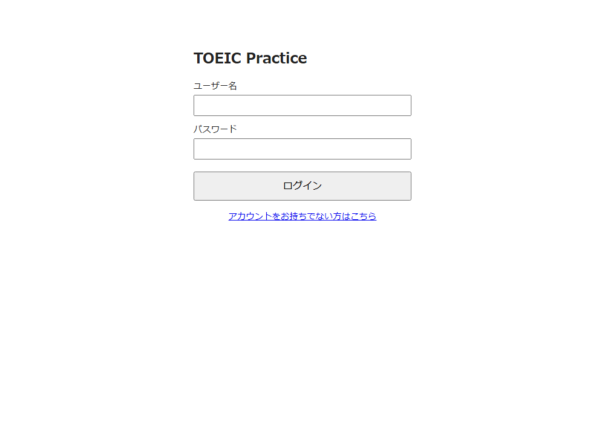
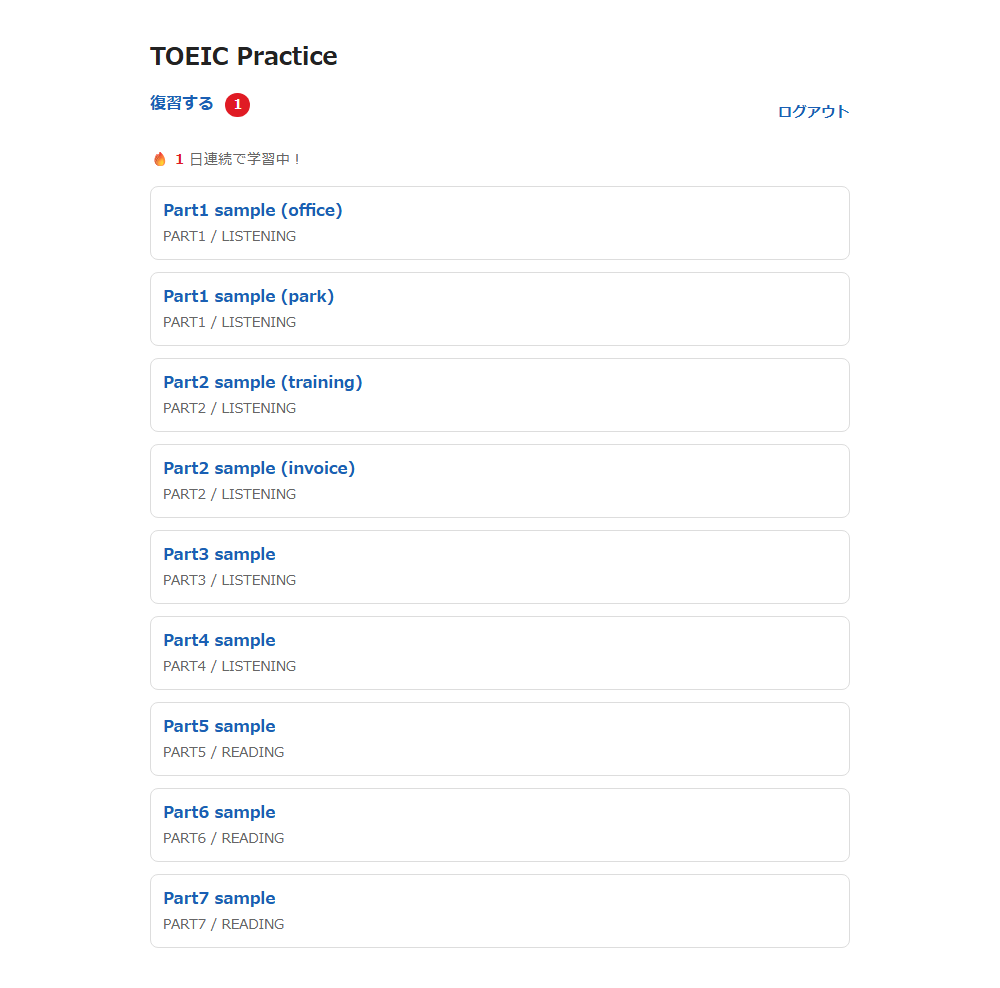
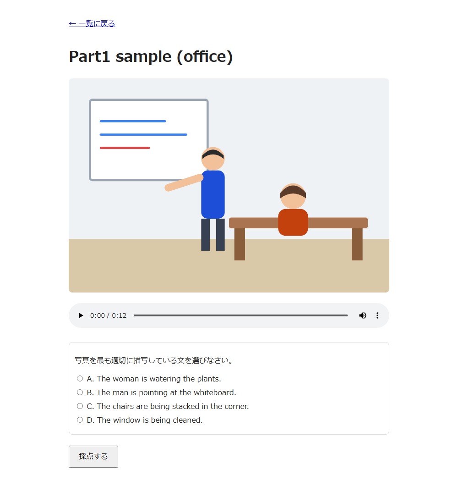

Spring Boot製のTOEIC学習Webアプリ。Reading(Part5〜7)とListening(Part1〜4)をブラウザで解いて、間違えた問題だけ効率よく復習できます。
短文穴埋め・長文穴埋め・読解問題を出題。
写真描写・応答問題・会話・トークを音声付きで出題。
不正解だった問題だけをまとめて解き直せる。ユーザーごとに記録。
連続で学習した日数を一覧画面に表示。
自分でアカウントを作成して、進捗を個別に管理できる。
正解/不正解の判定に加えて解説(Listeningはスクリプトも)を表示。



./mvnw spring-boot:run で起動してください。